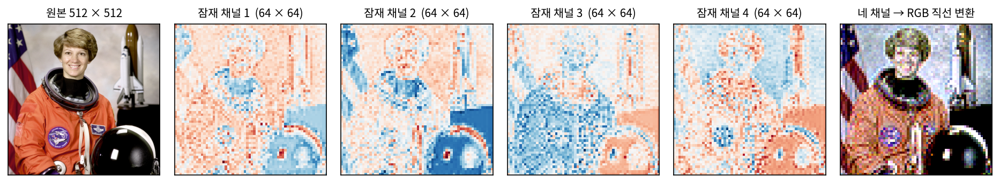

압축기: 칸의 배치를 지키며 줄이는 오토인코더
압축기로 쓸 것은 이미 만나 보았다. 그림을 짧은 수로 줄이는 인코더와 그 수를 그림으로 되살리는 디코더를 이어 붙여, 입력 그림 자신을 정답으로 배우게 한 오토인코더다. 손글씨 숫자에서는 784칸을 잠재 변수 2칸으로 줄였고, 잠재 변수가 놓일 자리를 정하려고 인코더가 구름(정규분포)을 내놓게 하고 그 구름을 표준정규분포 쪽으로 KL 발산(두 분포가 얼마나 다른지 재는 0 이상의 양)만큼 당겼다(VAE). 그 VAE 를 그대로 디퓨전의 압축기로 쓰면 될까? 손글씨 VAE 의 그림은 흐릿했고, 잠재 변수는 그림의 어느 자리와도 상관없는 숫자 두 개였다. 디퓨전 신경망은 합성곱과 해상도 단계로 그림의 칸 배치를 읽는다. 줄인 결과에도 칸의 배치가 남아 있어야 하지 않을까?
칸의 배치를 남긴 잠재
Stable Diffusion 1.x 의 압축기는 손글씨 VAE 와 두 가지가 다르다. 첫째, 인코더와 디코더가 MLP 가 아니라 합성곱 신경망이다. 인코더는 3 × 3 합성곱과 잔차 블록으로 짓고, 해상도를 반으로 줄이는 단계를 세 번 거친다(채널 128 → 256 → 512 → 512). 그래서 512 × 512 그림이 64 × 64칸이 된다. 마지막 층은 칸마다 수 8개를 내는데, 앞의 4개가 구름의 평균, 뒤의 4개가 로그 분산이다. 디코더는 그 반대 길을 간다(ComfyUI comfy/sd.py 의 기본 VAE 설정: ch 128, ch_mult [1, 2, 4, 4], z_channels 4). 매개변수는 인코더 34,163,592개, 디코더 49,490,179개로, 잡음 예측 U-Net(8억 6,000만 개)의 10분의 1이다.
둘째, 잠재가 벡터 하나가 아니라 작은 그림이다. 우주인 사진을 줄인 잠재의 네 채널을 따로 그려 보면 그대로 사진의 모양이 보인다.

64 × 64로 줄인 원본의 밝기와 견주면 첫째와 둘째 채널은 상관계수가 0.75, 0.85, 넷째 채널은 −0.74다. 잠재의 한 칸은 원래 그림의 8 × 8칸 조각을 맡고, 그 조각의 밝기와 색, 그리고 결의 종류를 수 4개에 적는다. 칸의 배치가 그대로이므로, 합성곱과 해상도 단계로 그림을 읽던 잡음 예측 신경망을 입력 채널만 4로 바꿔 그대로 쓸 수 있다.
압축기가 그림을 얼마나 줄이는지는 두 수로 정해진다. 가로세로를 줄이는 비율을 압축 배율 (가로세로를 줄이는 비율 / downsampling factor) f라 하고, 줄인 칸 하나에 담는 수의 개수를 잠재의 채널 수 C라 한다. 원래 그림의 f × f칸 조각(수 3f²개)이 수 C개가 되므로, 수의 개수는 3f²/C분의 1이 된다. Stable Diffusion 1.x 는 f = 8, C = 4라서 192/4 = 48분의 1이다.
흐리지 않게 되살리는 손실
손글씨 VAE 의 그림이 흐렸던 까닭은 디코더가 칸마다 따로 맞히는 손실(칸마다의 확률, 곧 제곱 오차와 같은 꼴)만 받았기 때문이었다. 결의 자리를 정확히 모르면 칸마다의 오차를 줄이는 가장 안전한 답은 여러 결의 평균, 곧 흐린 회색이다. 잠재 디퓨전 논문의 압축기는 손실을 세 가지로 바꿨다. 칸마다의 차이(절댓값 오차)에 더해, 두 그림을 학습된 그림 인식 신경망에 넣어 그 속의 특징끼리 견주는 지각 손실(LPIPS)을 더했다. 결의 자리가 조금 어긋나도 「같은 종류의 결」이면 특징이 비슷하게 나오므로, 흐린 평균보다 그럴듯한 결을 그리는 쪽이 손실이 작다. 여기에 그림 조각이 진짜인지 되살린 것인지 가려내는 판별 신경망을 함께 학습시키는 손실도 더했다(이 책은 판별 신경망으로 배우는 방법을 따로 다루지 않는다). Stable Diffusion 이 나중에 디코더만 다시 학습시킨 판(ft-MSE)은 제곱 오차에 LPIPS 를 0.1의 비중으로 더했다.
그리고 KL 항을 거의 꺼 버렸다. 논문의 부록은 KL 항에 10⁻⁶ 정도의 비중만 준다고 적는다.
KL 의 비중이 1이었던 손글씨 VAE 와 달리, 이 압축기는 이름만 VAE 이고 거의 오토인코더처럼 배운다. 실제로 우주인 사진을 넣으면 인코더 구름의 표준편차는 칸·채널마다 평균 0.00044다. 구름의 평균은 칸마다 표준편차 5.16만큼 퍼져 있으니, 구름은 사실상 점이다. 그래서 ComfyUI 는 그림을 줄일 때 구름에서 뽑지 않고 평균을 그대로 쓴다(DiagonalGaussianRegularizer 의 sample=False).
ML에서: 채널을 늘린 압축기
압축 배율 8, 채널 4는 Stable Diffusion 1.x·2.x 와 SDXL 이 쓴 설정이다(SDXL 은 같은 구조를 다시 학습한 압축기). 그 뒤 모델들은 채널을 늘렸다. Stable Diffusion 3 논문(에서와 동료들, 2024)은 압축 배율 8에서 채널만 4, 8, 16으로 바꾼 압축기를 견줘, 되살리기 PSNR 이 25.12, 26.40, 28.62 dB로 오른다고 보고했다. 그들은 16채널을 골랐다. FLUX.1 과 Z-Image 도 배율 8, 채널 16이다. FLUX.2 의 압축기는 배율 8, 채널 32로 줄인 뒤 이웃 2 × 2칸을 한 칸으로 묶어 배율 16, 채널 128로 내놓는다. Qwen-Image 의 압축기는 영상 압축기 Wan 2.1 VAE 와 같은 구조라 시간 축도 4배 줄이게 되어 있고, 그림 한 장은 시간 길이 1인 영상으로 넣어 배율 8, 채널 16의 잠재를 얻는다. krea.ai 의 Krea 2 도 이 압축기를 쓰고, Anima 도 같은 잠재 형식을 쓴다(ComfyUI comfy/latent_formats.py, supported_models.py, sd.py).
문제 4. 모둠 성적표
6 × 6 자리에 앉은 학생 36명이 과목 넷(국어·영어·수학·과학)의 점수를 받았다. 성적을 줄여 보고하는 방법이 둘 있다. (ㄱ) 반 전체의 과목별 평균 4개 (ㄴ) 앞뒤·좌우로 이웃한 2 × 2자리를 한 모둠으로 묶어 모둠 9개마다 과목별 평균 4개. (가) 원래 성적표의 수는 몇 개이고, 각 방법은 몇 분의 1로 줄이는가? (나) 「창가 맨 뒤 모둠의 수학 평균」과 「뒤쪽 모둠이 앞쪽 모둠보다 수학을 잘하는가」는 어느 방법으로 답할 수 있는가? (다) 이 두 방법은 손글씨 VAE 의 잠재와 Stable Diffusion 압축기의 잠재 가운데 각각 무엇을 닮았는가?

(가)는 36 × 4 = 144개요. (ㄱ)은 4개라 36분의 1, (ㄴ)은 9 × 4 = 36개라 4분의 1이요. (ㄱ)이 훨씬 많이 줄이니까 더 좋은 요약이네요.

(나)의 두 물음에 (ㄱ)로 답해 볼래요?

못 해요. 반 전체 평균에는 누가 어디 앉았는지가 다 섞여 버렸으니까요. (ㄴ)은 모둠마다 자리가 남아 있어서 창가 맨 뒤 모둠도 찾고 앞뒤도 견줄 수 있어요.

(다)는 (ㄱ)이 손글씨 VAE 야. 잠재 변수 2칸이 그림의 어느 자리와도 상관없는 숫자였잖아. (ㄴ)이 Stable Diffusion 압축기고. 8 × 8칸 조각마다 수 4개를 적으니까, 모둠마다 과목 4개를 적은 거랑 같은 모양이야.

그래요. 줄인 수가 적은 것보다, 줄인 뒤에도 「어디」를 물을 수 있는지가 디퓨전에게는 중요해요. 디퓨전 신경망은 칸의 이웃 관계로 그림을 읽으니까요.

선형대수에서 기저를 고를 때 자리마다 따로 노는 기저를 고르면 「어느 칸」을 그대로 읽을 수 있던 거랑 비슷하네요.

동아리 회비 정산을 총액 하나로만 보고하면, 어느 행사에서 돈이 샜는지 못 찾는 거랑 같아요.
문제 5. 꺼 버린 KL 항
압축기 인코더가 어떤 칸·채널에 평균 5, 표준편차 0.0003인 구름을 내놓았다. (가) 그 한 수의 KL 발산 ½(μ² + σ² − 1 − log σ²)은 얼마인가(로그는 자연로그)? (나) 우주인 사진(512 × 512) 하나를 넣고 잠재의 수 16,384개 모두에서 KL 을 더하면 349,199 nat 이다. KL 의 비중 10⁻⁶을 곱하면? 손글씨 VAE 의 KL 은 그림 하나에 6.81 nat 이고 비중이 1이었다. (다) 비중을 0으로 하지 않고 10⁻⁶으로 남긴 까닭은 무엇일까?
(가)는 ½(25 + 0.00000009 − 1 − log 0.00000009)예요. log 0.00000009 = −16.22니까 ½(24 + 16.22) = 20.11이요.
수 하나에 20 nat 이면 엄청 큰데. 손글씨 VAE 는 그림 하나 전체가 6.81이었어.

(나)는 349,199 × 10⁻⁶ = 0.35예요. 엄청 큰 KL 이 0.35로 줄었네요. 그럼 KL 항이 하는 일이 거의 없는 거니까, 0으로 둬도 되지 않아요?
KL 항을 완전히 빼면 이 압축기는 무엇이 되죠? 그리고 손글씨 오토인코더에서 인코더 끝에 10을 곱하고 디코더 앞에서 10으로 나누면 손실이 어떻게 됐었죠?

그대로였어요. 오토인코더는 잠재가 얼마나 큰 값에 놓이든 상관하지 않았어요. KL 항을 빼면 학습하다가 잠재가 수천, 수만까지 커져도 막을 게 없네요.
10⁻⁶은 「아주 멀리 가지만 않으면 된다」는 정도의 줄이에요. 구름의 크기를 정하는 힘은 거의 없어서 구름은 점이 되고, 평균이 5 근처까지 퍼지는 것도 막지 못하지만, 끝없이 커지는 것만은 막아요.
논문도 비슷하게 적었어요. 잠재 공간이 제멋대로 큰 분산을 갖지 않게 하려고 아주 작은 규제만 둔다고요. 그 대신 이 잠재는 표준정규분포와 크기가 다르다는 것을 기억해 두세요.
기숙사 통금을 새벽 다섯 시로 정한 거네요. 사실상 자유인데, 아예 안 들어오는 것만은 막는 거요.
문제 6. 4채널, 16채널, 128채널
1024 × 1024 그림을 세 압축기로 줄인다. Stable Diffusion 1.x 압축기(f = 8, C = 4), FLUX.1 압축기(f = 8, C = 16), FLUX.2 압축기(f = 16, C = 128). (가) 각 잠재의 모양, 수의 개수, 수를 몇 분의 1로 줄이는지 구하라. (나) 잠재 칸의 개수는 각각 몇 개인가? 칸끼리 서로 읽는 어텐션의 쌍은? (다) 글자 키 8 ~ 32픽셀의 글자 그림을 줄였다 되살리면 8픽셀 줄은 SD 1.x 압축기가 19.9 dB, FLUX.1 압축기가 27.2 dB 이고, 32픽셀 줄은 27.2 dB 와 38.6 dB 다. 채널을 늘리면 무엇을 얻고, 디퓨전 쪽에는 무엇이 남는가? (풀어 본 뒤 위젯 1에서 모델과 그림 크기를 골라 확인해 보자.)
SD 1.x 는 128 × 128 × 4 = 65,536개, 3 × 64 ÷ 4 = 48분의 1. FLUX.1 은 128 × 128 × 16 = 262,144개로 12분의 1. FLUX.2 는 64 × 64 × 128 = 524,288개, 3 × 256 ÷ 128 = 6분의 1이에요.
FLUX.2 가 수는 가장 많이 남기네. 그림 3,145,728개의 6분의 1이니까.
(나)에서 칸의 개수는요?

SD 1.x 와 FLUX.1 은 둘 다 128 × 128 = 16,384칸이고, FLUX.2 는 64 × 64 = 4,096칸이에요. 어, 수는 FLUX.2 가 가장 많은데 칸은 가장 적어요. 쌍으로 치면 16,384² = 2억 6,844만 개와 4,096² = 1,677만 개라 16분의 1이고요.
어텐션의 셈은 칸 수로 정해지고, 칸 하나에 수가 몇 개 담겼는지는 칸마다 곱하는 행렬의 크기에만 들어가. FLUX.2 는 배율을 키워 칸을 줄이고, 줄어든 칸에 채널을 몰아서 담은 거야.
(다)는요? 채널을 넷에서 열여섯으로 늘리면 무엇을 얻었죠?
작은 글자요. SD 1.x 압축기는 8픽셀 줄이 19.9 dB 였는데 FLUX.1 은 27.2 dB예요. 32픽셀 줄도 27.2에서 38.6으로 올랐고요. 압축기의 천장이 올라간 거예요.

대신 디퓨전이 맞혀야 하는 수가 네 배야. 칸 하나에 16개의 수가 서로 맞물리게 그려야 하니까 디퓨전 쪽 일은 더 어려워질 거야. 천장을 올린 만큼 그 천장까지 올라갈 디퓨전 모델도 커야 하지 않을까?
Stable Diffusion 3 논문이 그걸 쟀어요. 16채널 잠재에서 학습한 디퓨전 모델은 크기가 작을 때 4채널보다 오히려 나빴고, 모델을 키우자 따라잡았어요. 그들은 더 큰 모델로 갈 생각이라 16채널을 골랐고요. 압축기에 얼마를 맡기고 디퓨전에 얼마를 맡길지는 하나를 정하면 다른 하나가 따라 움직이는 저울이에요.

짐을 압축팩에 꽉 눌러 담으면 트럭은 작아도 되는데 풀 때 구겨진 옷이 생기고, 느슨하게 담으면 옷은 멀쩡한데 트럭이 커야 하는 거랑 같네요.